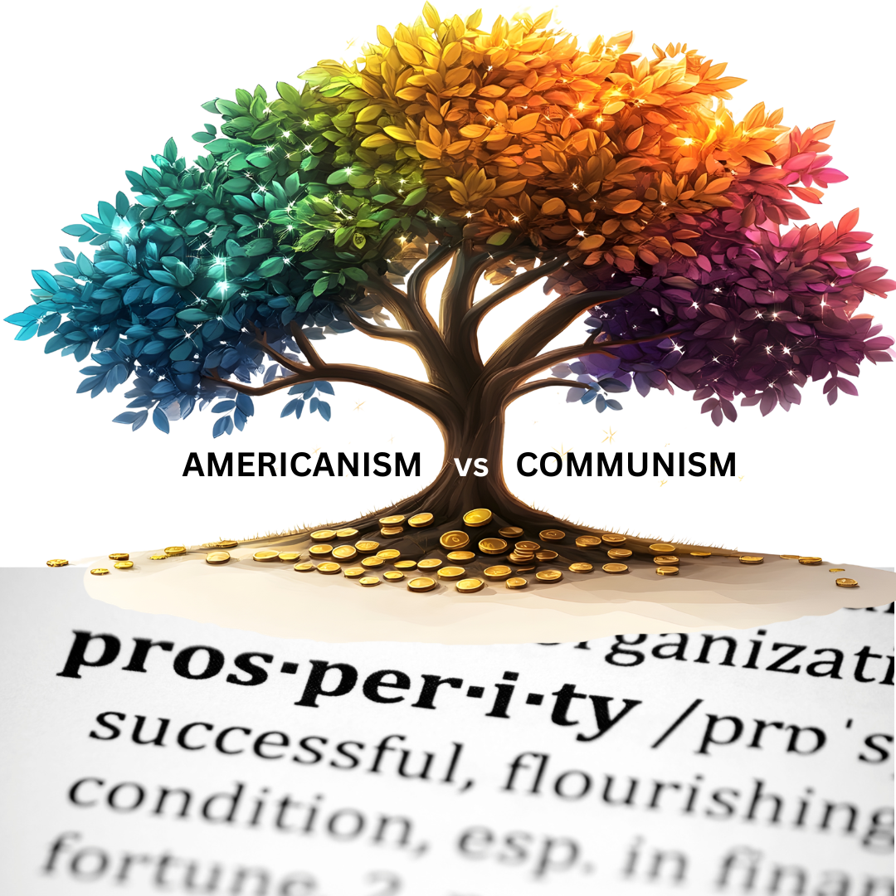

Americanism vs Communism
During the Cold War, primarily from the 1950s to the 1980s, both American and Soviet societies were systematically indoctrinated to misunderstand the opposing economic "ism," reducing complex ideologies to simplistic caricatures to serve state power. In the US, "Americanism" was framed as a divine struggle for freedom and capitalism against a godless, tyrannical communism, using schools, media, and civil drills to equate free markets with liberty itself, while obscuring its tendencies toward inequality and crisis. Simultaneously, the USSR taught that state-controlled communism was a scientifically inevitable path to a classless utopia, vilifying capitalism as inherently exploitative, all while masking the system's brutal inefficiency and the rise of a new oppressive party elite. This mutual indoctrination intentionally distorted the full spectrum of economic models — from free markets to mixed economies and socialism — creating a false binary that ignored the nuanced failures and potential syntheses of different systems, ultimately prioritizing nationalist loyalty over a genuine understanding of economic principles that could serve a healthy humanity.
The systematic indoctrination that reduced complex economic systems to warring caricatures created a profound and lasting societal ill: a financially illiterate populace. This is why it is now crucial for individuals to undertake the task of clearly understanding the why and how — the complete history of money, economics, and the financial system. Such knowledge is the essential antidote to this historical propaganda and the key to righting the compounded wrongs we have inherited. When one traces the evolution from barter to coinage, from the gold standard to fiat currency and complex derivatives, they see that money is not a force of nature but a human-made tool, one whose design and control have always been a source of immense power. Understanding this history reveals that the "isms" of economics — capitalism, communism, socialism — are not immutable truths but competing frameworks for organizing this tool, each with documented flaws and trade-offs that were deliberately hidden during the Cold War. This foundational knowledge empowers people to see through the ideological debris of the past and recognize that our current systems — marked by extreme inequality, boom-bust cycles, and environmental externalities — are not the endpoint of history, but a moment in an ongoing evolution. Armed with this clarity, we can move beyond the false binaries of the 20th century and begin the necessary work of designing new, more humane, and sustainable economic models. We can transition from being passive subjects of economic forces to becoming conscious architects of a system that truly serves humanity, rather than the other way around. In this light, financial and economic literacy is not merely a personal finance skill, but the most fundamental form of civic empowerment, without which genuine and lasting progress is impossible.


